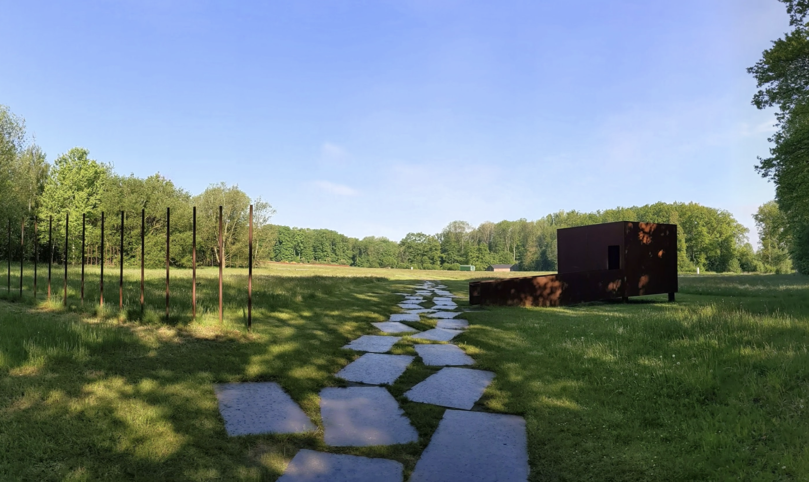
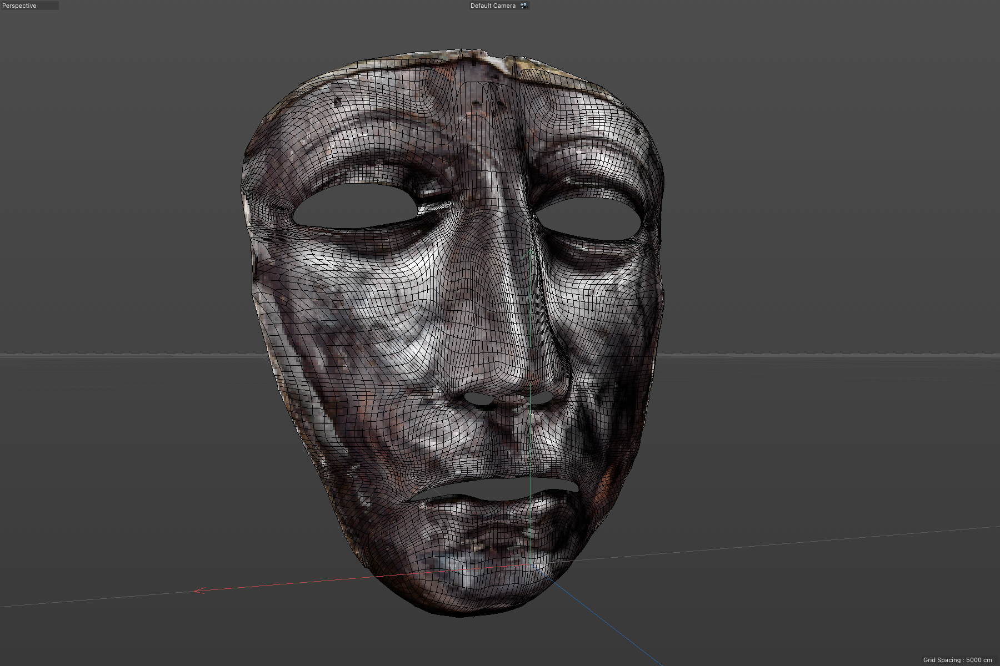
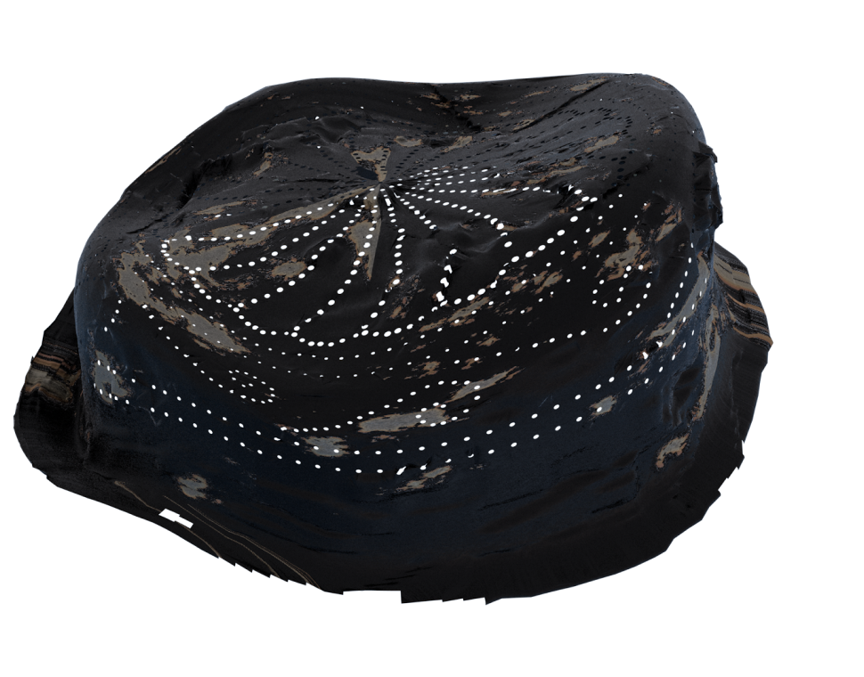
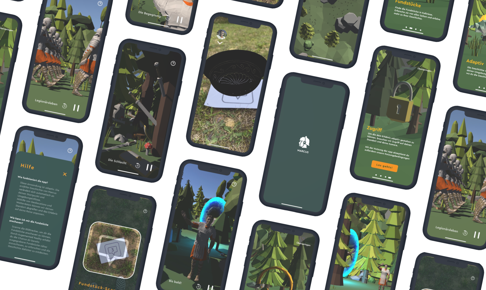

- Role: Storywriting, Coding, VR
- Dates: March 2021 - September 2021
- Tools: Unity, Cinema 4D, Adobe CC
- Team: Nele Mönkhoff, Tim Milwa, Hong Ngoc Le
Overview
MARCUS is an adaptive audiobook experiences which adapts to each and every user while taking in geolocation. Additionally it supports Augmented Reality at certain points of intereset. The project was in collaboration with the Museum of the Teutoburg Forest. .
Problem
The museum itself is located on a large meadow. Since the surrounding are is still used for excavation searching there is also a chance for visitor to visit the grounds. But it doesn't show much guidance to the visitors which can be quiet vast and boring.
Goals
We were asked to develop a product that would make the museum experience more interesting for younger people (Gen Z) and introduce a new way to incorporate the meadow grounds to the already existing museum on site.
Process
We started out brainstorming for ideas which could make use of the large museum grounds and surrounding areas. Since we didn’t want the visitors to stare at their phones constantly we decided to develop an audio guide with a twist: the usage of GPS and Geolocation to make an adaptive experience. Depending on where visitors would start the guide (from home or the museums parking lot) it would change its’ story and directory. Adding to that we wanted to incorporate an augmented reality aspect to the experience. Since the grounds are still used for excavations, it was the perfect opportunity to again, use the GPS locations for users to find already excavated pieces and look at them through the app on their phone. We worked together with the theatre department of our university to create the audiobook and slowly built our „look like real“ 3D Objects for our Unity project.
Final Product
Unfortunately the project is a unity app, so I cannot link it.